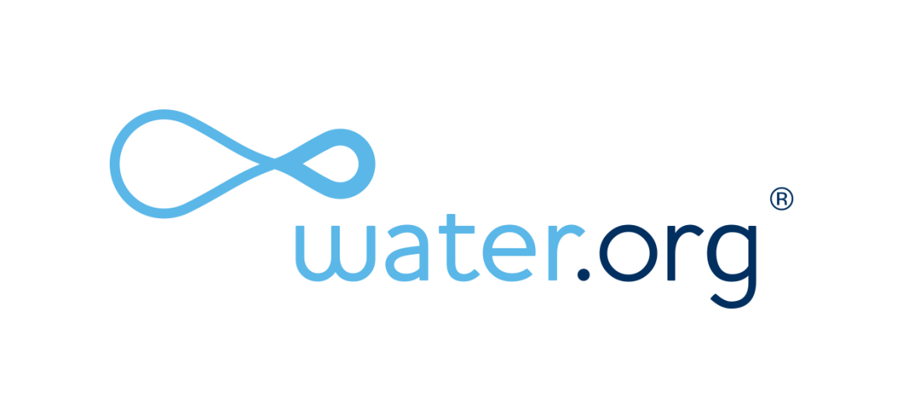

Join the cause.
Be a part of the solution towards a better world. Help us fight the global water crisis and join us take action to help the millions of families and children in need. A simple donation to any of the charities or non-profit organizations below can help bring water to an entire community.
Get involved.
A donation to any of these well-known charities or non-profit organizations below can help improve the lives of hundreds. Make sure to check out these amazing foundations and their advocacies for solving the global water crisis.
water.org
A non-profit organization providing poeple access to safe water and sanitation in developing countries by working with local water organizations to build wells and provides seminars about good hygiene. Founded by Matt Damon and Gary White, this organization has helped over 22 million people all over the world gain access to safe water and sanitation.
Check out the website here.Waves for Water
This humanitarian organization provides clean water to communities in need around the world through its Courier Program of distributing water filters to travelers. It has 24 active programs that have helped at least 3.7 million people in need in over 44 countries. They have responded to 33 global disasters and counting. Their philosophy is rooted in one simple idea: “do what you love and help along the way.”
Learn more about Waves for Water.charity: water
This is a non-profit that brings clean and safe drinking water to people in developing countries by using 100% of donations to developing clean water technologies that range from wells to water filtration. They have built sustainable, community-owned water projects around the world and have funded over 44,000 water projects helping over 10 million people in 27 countries.
Donate to charity: water on their website.c Mg2023 by DE LEON, LAZARO, & SANTOS.
All rights reserved.